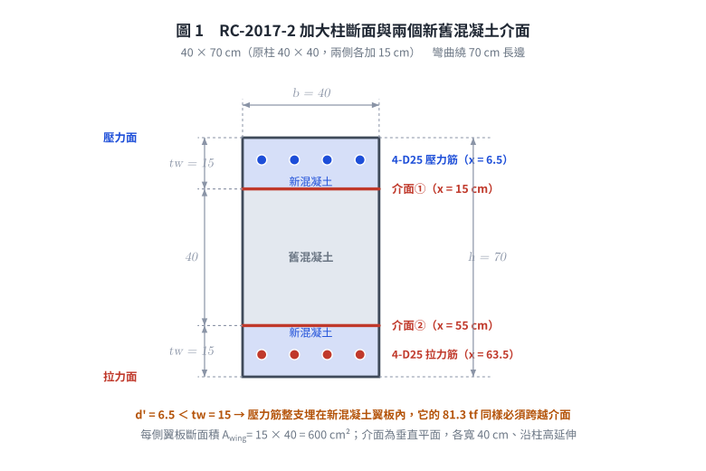
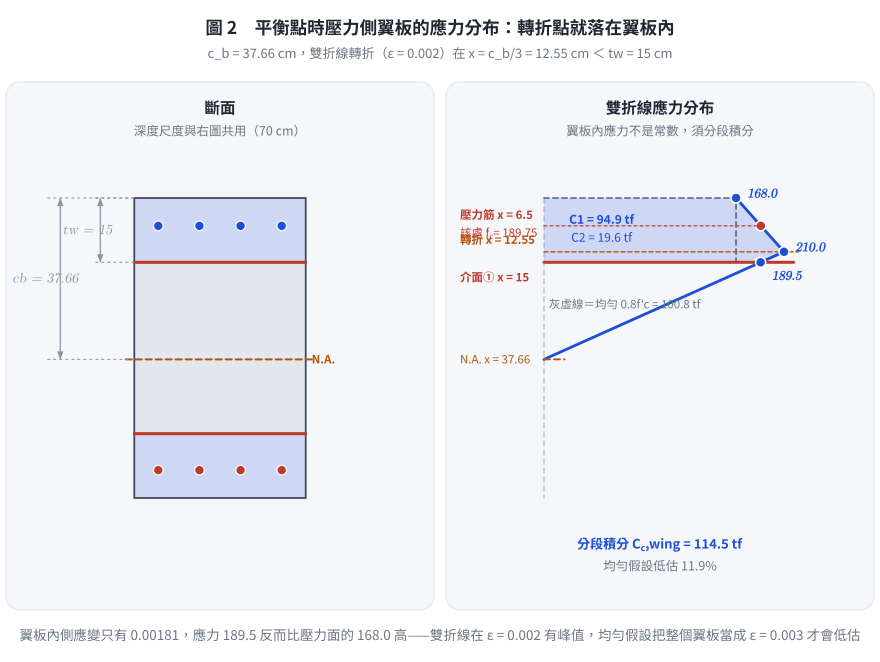
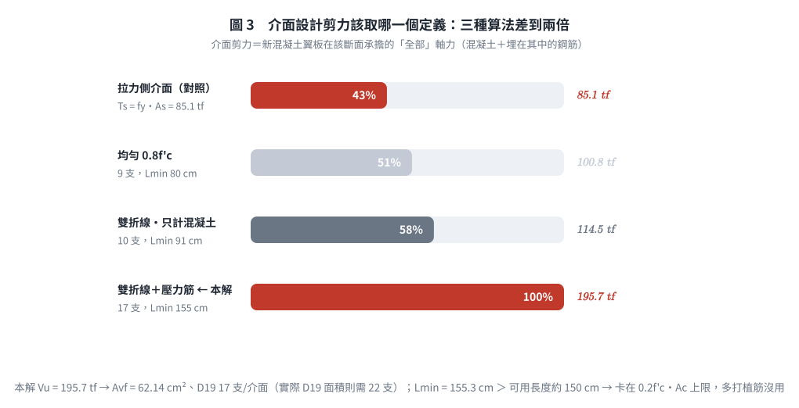

考題編號：RC-2017-2
主分類： RC-U2-1 RC 剪力強度分析與設計
副分類： RC-U1-2 RC 柱強度分析與設計
設計法： USD強度設計法
標籤： 加大柱 介面剪力 摩擦剪力法 植筋設計 新舊混凝土結合 複合截面 Shear Friction 粗糙面 雙折線積分 介面應力上限 彎矩反向
1. 原始題目重述 (Problem Restatement)
規範依據（原卷明訂）： 中國土木水利工程學會「混凝土工程設計規範與解說」（土木 401-100），未依規範作答不予計分。
原卷原文（106 年第二題）：
承上題，為確保該柱新舊混凝土可充分結合，以發揮複合作用，請問新舊混凝土介面在彎矩最大時需承受多少剪力，如何設計植筋以確保介面不致分離，新舊混凝土間已經過表面粗糙處理。（植筋使用 D19，$f_y = 4{,}200\ \text{kgf/cm}^2$，$A_b = 3.871\ \text{cm}^2$）（25 分）
承 RC-2017-1 之條件與結果：
- 原柱 $40\times40$ cm，加大為 $40\ \text{cm}\times70\ \text{cm}$（兩側各加 $15\ \text{cm}\times40\ \text{cm}$ 新混凝土）
- 新舊混凝土 $f'_c = 210\ \text{kgf/cm}^2$（相同），$f_y = 4{,}200\ \text{kgf/cm}^2$
- 8 支 D25（$A_b = 5.067$ cm²）分布於長向兩邊，每邊 4 支成一直行，保護層（至鋼筋中心）$d' = 6.5$ cm
- 混凝土本構為題給雙折線：$0\to0.002$ 線性升至 $1.0f'_c$，$0.002\to0.003$ 線性降至 $0.8f'_c$
- 「彎矩最大」狀態＝ Q1 Part (c) 的平衡點：$c_b = 37.66$ cm，$M_{n,b} = 89.3$ tf·m
- 介面處理：已故意粗糙化（凹凸深度 $\ge$ ¼ in $= 6$ mm）
⚠ 原卷自身的資料錯誤（照抄留檔）： 原卷寫「D19，$A_b = 3.871\ \text{cm}^2$」，
但 D19 的實際斷面積是 2.865 cm²（$d_b = 1.91$ cm）；3.871 cm² 才是 D22（$d_b = 2.22$ cm）。
本解依原卷數值作答（$A_b = 3.871$），並在 §5 一併列出用實際 D19 面積的支數，
作答時宜一句話註明此矛盾（同一庫的 RC-2009-3 記的 $A_{s,\text{D19}} = 2.87$ 才是正確值）。

圖 1 斷面與兩個介面。$d' = 6.5 < t_w = 15$ → 壓力筋整支埋在新混凝土翼板裡，它那 81.3 tf 同樣得跨越介面；漏算這一項會把介面剪力低估 42%。
2. 考題核心精神與出題者意圖 (Core Concepts & Examiner's Intent)
核心觀念： 加大柱的新舊混凝土若介面傳力不足，兩部分將「各自為政」，第一題算出的 $A_g = 2{,}800\ \text{cm}^2$ 組合截面強度根本兌現不了。本題測試：
- 介面剪力設計力的判斷：新混凝土翼板在「彎矩最大」狀態下所承擔的全部軸向力（混凝土壓力 ＋ 該翼板內鋼筋的力），就是介面必須傳遞的剪力
- 必須與第一題同一組假設：Q1 用的是雙折線分區積分，翼板內的混凝土應力不是常數，不可退回「均勻 $0.8f'_c$」
- 摩擦剪力法（Shear Friction）的正確應用：粗糙面 $\mu$、$\phi$、以及 $V_n$ 的介面應力上限
- 植筋（Dowel Bars）的功能與錨定：穿越介面的鋼筋要能兩端都發展到 $f_y$ 才提供夾緊力
出題者意圖：
- 測試「介面剪力＝新混凝土翼板承擔的力」這個力學邏輯（力流連續性）
- 測試學生能否從第一題的雙折線結果一致地接續，而非另起一套假設
- 測試摩擦剪力法完整流程：$\phi V_n = \phi\mu A_{vf}f_y \ge V_u$、支數、$V_n$ 上限反推分布長度、錨定
3. 解題戰略地圖與陷阱分析 (Strategic Roadmap & Trap Analysis)
作戰計畫：
- 取 Q1 平衡點的應變／應力分布（$c_b = 37.66$ cm，轉折點 $x = c_b/3 = 12.55$ cm）
- 對壓力側新混凝土翼板（$x = 0\sim15$ cm）分段積分求 $C_{c,\text{wing}}$
- 加上落在翼板內的壓力鋼筋力 $C'_s$ → 介面設計剪力 $V_u$
- 檢核拉力側介面（$T_s$），確認何者控制；並考慮彎矩反向
- 套摩擦剪力法求 $A_{vf}$ → D19 支數
- 以 $V_n$ 介面應力上限反推最小分布長度 $L_{\min}$ 與間距
- 檢核兩端錨定（舊柱側化學植筋、新混凝土側彎鉤／頭錨）
關鍵陷阱：
| # | 陷阱 | 正確做法 |
|---|---|---|
| 1 | 假設翼板應力均勻 $0.8f'_c$ | 雙折線的峰值 $1.0f'_c$ 落在距壓力面 $c_b/3 = 12.55$ cm 處，就在翼板內部；翼板應力自 168 升到 210 再降到 189.5，須分段積分（均勻假設低估 12%） |
| 2 | 漏算落在翼板內的鋼筋力 | 壓力筋在 $d' = 6.5$ cm，$6.5 < 15$ → 在新混凝土翼板內，其 81.3 tf 同樣必須跨越介面（漏算會低估 42%） |
| 3 | $\mu$ 值取錯 | 一體澆置 $\mu=1.4$；故意粗糙化（對硬化面）$\mu=1.0$；未粗糙化 $\mu=0.6$；對型鋼 $\mu=0.7$。本題 $\mu = 1.0$ |
| 4 | $\phi$ 用 0.65 或 0.9 | 摩擦剪力屬剪力類，$\phi = 0.75$ |
| 5 | $V_n$ 上限引用錯行 | 粗糙面：$\min\!\big(0.2f'_c,\ 3.3{+}0.08f'_c\,\text{MPa},\ 11\,\text{MPa}\big)A_c$；「$5.5$ MPa」那一行是未粗糙化才用的 |
| 6 | 只設計壓力側介面 | 耐震評估後加大的柱，地震彎矩會反向，兩側介面都要按較大值設計 |
| 7 | 錨定當成鋼筋伸展長度 | D19 直線伸展長度需 $\approx105$ cm，舊柱只有 33.5 cm；必須走化學植筋（ACI 318 第 17 章黏著型錨栓）或機械錨定 |
3.5 變數層次分析 (Variable Hierarchy Analysis)
複習提示：第一次解題後，在每個卡住的知識點旁標記
⚠；第二次複習時只看有⚠的項目。
最終目標
介面設計剪力 Vu → 每個介面所需植筋量（D19 支數）、最小分布長度、錨定方式
本題關鍵公式（依計算順序）
$\boxed{\cdot}$ = 需由前步驟推導，非題目直接給定的變數
$$\text{Step 1: } c_b = \frac{\varepsilon_{cu}}{\varepsilon_{cu}+\varepsilon_y}d,\qquad x_{\text{peak}} = \frac{\boxed{c_b}}{3}$$
$$\text{Step 2: } C_{c,\text{wing}} = b\!\int_0^{t_w}\! f_c(x)\,dx \quad(\text{分段：梯形}+\text{梯形})$$
$$\text{Step 3: } V_u = \boxed{C_{c,\text{wing}}} + \boxed{C'_s}$$
$$\text{Step 4: } A_{vf} \ge \frac{\boxed{V_u}}{\phi\,\mu\,f_y},\qquad n = \left\lceil \frac{\boxed{A_{vf}}}{A_b}\right\rceil$$
$$\text{Step 5: } V_n = \frac{\boxed{V_u}}{\phi} \le 0.2f'_c A_c \ \Rightarrow\ L_{\min} = \frac{\boxed{V_n}}{0.2f'_c\,b}$$
L1：題目直接給定
| 符號 | 數值 | 說明 |
|---|---|---|
| $t_w$ | 15 cm | 新混凝土翼板厚度（每側） |
| $b$ | 40 cm | 柱寬（＝介面寬度） |
| $h$ | 70 cm | 加大後柱深 |
| $A_b$ (D19) | 3.871 cm² | 原卷給定值（實際 D19 為 2.865） |
| $f_y$ | 4,200 kgf/cm² | 植筋降伏強度 |
| $f'_c$ | 210 kgf/cm² | 混凝土強度（新舊相同） |
| $d'$／$d$ | 6.5／63.5 cm | 壓力筋／拉力筋位置 |
| 介面條件 | 故意粗糙化 | $\mu = 1.0$（常重混凝土） |
L2：需知識點推導
Step 1：Q1 平衡點的應力分布
| 符號 | 公式/來源 | 卡關? |
|---|---|---|
| $\varepsilon_y$ | $4200/2.04\times10^6 = 0.002059$ | |
| $c_b$ | $\dfrac{0.003}{0.003+0.002059}\times63.5 = 37.66$ cm | |
| $x_{\text{peak}}$ | $c_b/3 = 12.55$ cm（$\varepsilon = 0.002$，$f_c = 210$） | |
| $f_c(0)$ | $0.8f'_c = 168$ kgf/cm² | |
| $f_c(15)$ | $210\times(37.66-15)/(37.66-12.55) = 189.5$ kgf/cm² |
Step 2：翼板內力
| 符號 | 公式/來源 | 卡關? |
|---|---|---|
| $C_1$（$0\sim12.552$） | $\frac{168+210}{2}\times12.552\times40 = 94{,}896$ kgf | |
| $C_2$（$12.552\sim15$） | $\frac{210+189.5}{2}\times2.448\times40 = 19{,}558$ kgf | |
| $C_{c,\text{wing}}$ | $94{,}896+19{,}558 = 114{,}454$ kgf $= 114.5$ tf | |
| $C'_s$ | $(4200-189.75)\times20.27 = 81{,}288$ kgf $= 81.3$ tf | |
| $V_u$ | $114{,}454+81{,}288 = 195{,}742$ kgf $= 195.7$ tf |
Step 3：摩擦剪力設計
| 符號 | 公式/來源 | 卡關? |
|---|---|---|
| $\phi$ | 0.75（剪力類） | |
| $\mu$ | 1.0（常重混凝土、故意粗糙面） | |
| $A_{vf}$ | $195{,}742/(0.75\times1.0\times4200) = 62.14$ cm² | |
| $n$ (D19) | $62.14/3.871 = 16.05 \Rightarrow$ 17 支 | |
| $V_n$ | $195{,}742/0.75 = 260{,}989$ kgf | |
| $L_{\min}$ | $260{,}989/(0.2\times210\times40) = 155.4$ cm |
L3：深層知識（不懂就卡住）
| 知識點 | 說明 | 卡關? |
|---|---|---|
| 摩擦剪力機制（Shear Friction） | 介面滑動時粗糙面互相「爬升」，迫使穿越介面的鋼筋受拉（$A_{vf}f_y$），該拉力反作用成為介面的夾緊力（Clamping Force）；夾緊力 $\times\ \mu$ ＝ 剪力抵抗 | |
| $\mu$ 值分級 | 一體澆置 $1.4\lambda$；故意粗糙化 $1.0\lambda$；未粗糙化 $0.6\lambda$；對型鋼 $0.7\lambda$ | |
| 介面剪力 ＝ 翼板軸力 | 由零彎矩斷面到最大彎矩斷面，翼板軸力由小增大，其增量必須全部由介面剪力累積傳入；故「最大彎矩處的翼板軸力」就是介面須傳遞的總剪力 | |
| 鋼筋力也要過介面 | $d' = 6.5 < t_w = 15$，壓力筋整支埋在新混凝土裡；它的 81.3 tf 是靠新混凝土的握裹發展出來的，最終仍須經介面傳給舊柱 | |
| $V_n$ 有介面應力上限 | 植筋加再多也沒用——$V_n \le 0.2f'_cA_c$ 是混凝土介面本身的天花板，只能靠加長分布範圍（增大 $A_c$）或提高 $f'_c$ | |
| 植筋錨定的真正難點 | 摩擦剪力要求鋼筋兩端都能發展 $f_y$。D19 直線伸展長度 $\approx105$ cm，舊柱可用 33.5 cm、新翼可用 8.5 cm，兩端都不夠 → 舊柱側用化學植筋、新翼側用 90° 彎鉤或頭錨鋼筋 |
4. 步驟化詳細計算過程 (Step-by-Step Detailed Calculation)
【前置】介面幾何說明
加大後柱 $40\ \text{cm}\times70\ \text{cm}$，彎曲繞 70 cm 長邊。新舊混凝土的兩個介面是垂直平面，各寬 40 cm（柱寬方向）、沿柱高延伸：
壓力面 x=0
┌───────────────┐ ← 4-D25 壓力筋 @ d'=6.5（在新混凝土內）
│ 新混凝土 15cm │
├───────────────┤ ← 介面 ①（x = 15 cm），40 cm 寬
│ │
│ 舊混凝土 40cm │
│ │
├───────────────┤ ← 介面 ②（x = 55 cm），40 cm 寬
│ 新混凝土 15cm │
└───────────────┘ ← 4-D25 拉力筋 @ d=63.5（在新混凝土內）
拉力面 x=70
$$A_{\text{wing}} = t_w\times b = 15\times40 = 600\ \text{cm}^2\ \text{（每側斷面積）}$$
【Step 1】「彎矩最大」時的應力分布（承 Q1 Part c）
$$\varepsilon_y = \frac{f_y}{E_s} = \frac{4200}{2.04\times10^6} = 0.002059,\qquad c_b = \frac{0.003}{0.003+0.002059}\times63.5 = \boxed{37.66\ \text{cm}}$$
雙折線轉折點（$\varepsilon = 0.002$）位於：
$$x_{\text{peak}} = \frac{c_b}{3} = \boxed{12.55\ \text{cm}}\ \ (< t_w = 15\ \text{cm}\ \Rightarrow\ \textbf{轉折點就在翼板內})$$
| 位置 $x$（距壓力面） | $\varepsilon$ | $f_c$ (kgf/cm²) |
|---|---|---|
| 0（壓力面） | 0.003 | $0.8f'_c = 168.0$ |
| 12.55（轉折） | 0.002 | $1.0f'_c = 210.0$ |
| 15（介面①） | 0.00181 | 189.5 |
| 37.66（中性軸） | 0 | 0 |
【Step 2】壓力側新混凝土翼板的混凝土壓力 $C_{c,\text{wing}}$
分段一（$0\le x\le12.55$，梯形 $168\to210$）：
$$C_1 = \frac{168+210}{2}\times12.552\times40 = 189\times12.552\times40 = \boxed{94{,}896\ \text{kgf}}$$
分段二（$12.552\le x\le15$，梯形 $210\to189.5$）：
$$C_2 = \frac{210+189.5}{2}\times2.448\times40 = 199.76\times2.448\times40 = \boxed{19{,}558\ \text{kgf}}$$
$$C_{c,\text{wing}} = 94{,}896 + 19{,}558 = \boxed{114{,}454\ \text{kgf} = 114.5\ \text{tf}}$$
對照：若用均勻 $0.8f'_c$ → $168\times600 = 100{,}800$ kgf，低估 12.0%。
均勻假設的錯誤在於它把整個翼板當成應變都 0.003，
但實際上翼板內側應變只有 0.00181、應力反而比壓力面高（雙折線在 0.002 有峰值）。
【Step 3】落在翼板內的壓力鋼筋力 $C'_s$
壓力筋 4-D25（$A'_s = 4\times5.067 = 20.27\ \text{cm}^2$）位於 $d' = 6.5$ cm，在新混凝土翼板之內。
扣除其所排開的混凝土（該處雙折線應力 $= 168+3.35\times6.5 = 189.75$）：
$$C'_s = (f_y - f_c@d')\,A'_s = (4{,}200 - 189.75)\times20.27 = 4{,}010.25\times20.27 = \boxed{81{,}288\ \text{kgf} = 81.3\ \text{tf}}$$
【Step 4】介面設計剪力 $V_u$
$$\boxed{V_u = C_{c,\text{wing}} + C'_s = 114{,}454 + 81{,}288 = 195{,}742\ \text{kgf} \approx 195.7\ \text{tf}}$$
拉力側介面檢核： 拉力筋 4-D25 也整支埋在另一側新混凝土翼板內：
$$T_s = f_y A_s = 4{,}200\times20.27 = 85{,}134\ \text{kgf} = 85.1\ \text{tf} \ <\ 195.7\ \text{tf}$$
📝 策略註解： 兩個介面在同一瞬間承受的力不同（壓力側 195.7 tf、拉力側 85.1 tf），
但本柱是耐震評估後加大的，地震彎矩會反向——原本的拉力側下一秒就是壓力側。
故兩側介面均按 195.7 tf 設計（施工上也不可能左右不同配置）。
【Step 5】摩擦剪力法求植筋量
依土木 401-100（＝ACI 318 摩擦剪力法）：
$$\phi V_n = \phi\,\mu\,A_{vf}\,f_y \ \ge\ V_u$$
| 參數 | 取值 | 依據 |
|---|---|---|
| $\phi$ | 0.75 | 剪力類強度折減係數 |
| $\mu$ | 1.0 | 故意粗糙化接觸面（凹凸深 $\ge6$ mm），常重混凝土 |
$$A_{vf} \ge \frac{V_u}{\phi\mu f_y} = \frac{195{,}742}{0.75\times1.0\times4{,}200} = \frac{195{,}742}{3{,}150} = \boxed{62.14\ \text{cm}^2}$$
$$n \ge \frac{A_{vf}}{A_b} = \frac{62.14}{3.871} = 16.05 \quad\Rightarrow\quad \boxed{n = 17\ \text{支 D19（每個介面）}}$$
實際提供：$17\times3.871 = 65.81\ \text{cm}^2 > 62.14\ \text{cm}^2$ ✓
【Step 6】$V_n$ 介面應力上限與最小分布長度
粗糙化之常重混凝土介面（土木 401-100 ＝ ACI 318 §22.9.4.4(a)）：
$$V_n \le \min\!\Big(0.2f'_c,\ (3.3+0.08f'_c)\,[\text{MPa}],\ 11\,[\text{MPa}]\Big)\times A_c$$
換算為 kgf/cm²（$f'_c = 210\ \text{kgf/cm}^2 = 20.59$ MPa）：
$$\min\big(0.2\times210,\ 4.95\ \text{MPa} = 50.4,\ 11\ \text{MPa} = 112.2\big) = \boxed{42.0\ \text{kgf/cm}^2}\ \ (\text{由 }0.2f'_c\text{ 控制})$$
$$V_n = \frac{V_u}{\phi} = \frac{195{,}742}{0.75} = 260{,}989\ \text{kgf}$$
$$A_c \ge \frac{260{,}989}{42.0} = 6{,}214\ \text{cm}^2 \quad\Rightarrow\quad L_{\min} = \frac{6{,}214}{40} = \boxed{155.4\ \text{cm}}$$
即 17 支 D19 必須分布在柱高至少 155 cm 的範圍內。
【Step 7】植筋間距
$$s = \frac{155.4}{17} \approx 9.1\ \text{cm} \quad\Rightarrow\quad \text{採 D19 @ 9 cm，每側 17 支，分布長度 } \ge 155\ \text{cm}$$
📝 策略註解： 這個 155 cm 不是「可以自由放寬」的數字。介面剪力是從零彎矩斷面
累積到最大彎矩斷面的，可用的傳遞長度大約就是柱淨高的一半（反曲點到柱端）。
若柱淨高 300 cm、反曲點在中央，可用長度 $\approx150\ \text{cm} < 155.4\ \text{cm}$ ——幾乎剛好壓線。
也就是說本題的介面設計其實是被混凝土介面應力上限卡住，而不是被植筋量卡住。
若長度不足，唯一出路是加大介面面積（新混凝土改成三面或四面包覆、使介面寬度由 40 cm 增加）
或提高新混凝土 $f'_c$——多打植筋完全沒用。這是本題最有價值的工程結論。
【Step 8】植筋錨定驗核
摩擦剪力法要求植筋兩端都能發展到 $f_y$。
直線伸展長度需求（作為對照）： D19（$d_b = 1.91$ cm）在 $f'_c = 210$：
$$l_d \approx 0.285\,\frac{f_y}{\sqrt{f'_c}\cdot\frac{c_b+K_{tr}}{d_b}}\,d_b \approx 0.285\times\frac{4200}{14.49\times1.5}\times1.91 \approx 105\ \text{cm}$$
兩端都遠遠不足（舊柱 40 cm、新翼 15 cm）→ 必須改用錨定手段：
| 端別 | 可用深度 | 對策 |
|---|---|---|
| 舊混凝土側 | $40 - 6.5 = 33.5$ cm $\approx 17.5d_b$ | 化學植筋（黏著型錨栓），依 ACI 318 第 17 章以產品認證黏結強度 $\tau_{cr}$ 檢核 $N_a = \tau_{cr}\pi d_b h_{ef}$；一般 $h_{ef} = 10\sim15d_b = 19\sim29$ cm，33.5 cm 足夠 ✓ |
| 新混凝土側 | $15 - 6.5 = 8.5$ cm | 直線段完全不足 → 設 90° 標準彎鉤（彎鉤後沿柱軸向延伸 $12d_b = 22.9$ cm）或改用頭錨鋼筋（headed bar） |
群錨效應提醒： D19 @ 9 cm 的間距約 $4.7d_b$，化學植筋的群體效應（混凝土錐體重疊、劈裂）須依 ACI 318 第 17 章驗核；必要時改採雙排交錯配置以加大有效間距。
【結論】
| 項目 | 結果 |
|---|---|
| 平衡點中性軸 $c_b$ | 37.66 cm（轉折點 12.55 cm 落在翼板內） |
| 翼板混凝土壓力 $C_{c,\text{wing}}$ | 114.5 tf |
| 翼板內壓力鋼筋力 $C'_s$ | 81.3 tf |
| 每個介面設計剪力 $V_u$ | $\boxed{195.7\ \text{tf}}$ |
| 拉力側介面 $T_s$（對照） | 85.1 tf（不控制；但彎矩反向後同為 195.7） |
| 每個介面所需植筋 $A_{vf}$ | 62.14 cm² |
| 每個介面 D19 植筋數 | $\boxed{17\ \text{支 D19}}$（依原卷 $A_b = 3.871$；用實際 D19 面積則需 22 支） |
| 最小分布長度 $L_{\min}$ | $\ge 155\ \text{cm}$（由 $0.2f'_cA_c$ 控制） |
| 建議間距 | D19 @ 9 cm |
| 共兩個介面 | 共 34 支 D19 |
| 植筋錨定 | 舊柱側：化學植筋 $h_{ef} \ge 19\sim29$ cm（可用 33.5 cm ✓）；新混凝土側：90° 彎鉤或頭錨 |

圖 2 翼板內的雙折線應力分布。轉折點 $x = c_b/3 = 12.55$ cm 就在翼板內，翼板內側應變只有 0.00181、應力 189.5 反而比壓力面的 168 高；把翼板當成均勻 $0.8f'_c$ 會低估 11.9%，而且與第一題的雙折線假設自相矛盾。

圖 3 介面剪力該取哪一個定義。三種算法差到近兩倍，作答時寫明採用哪一個並說明理由，比記住某個數字重要。右下的結論更值錢：$L_{\min} = 155$ cm 已超過可用傳遞長度約 150 cm，卡住的是 $0.2f'_cA_c$ 的介面應力上限——多打植筋完全沒用。
5. 關鍵爭議點與進階探討 (Critical Issues & Advanced Discussion)
爭議 1：介面設計剪力該取哪一個定義？（本題最大分歧）
| 定義 | $V_u$ | $A_{vf}$ | D19 支數（$A_b{=}3.871$） | $L_{\min}$ | 評述 |
|---|---|---|---|---|---|
| 均勻 $0.8f'_c\times A_{\text{wing}}$ | 100.8 tf | 32.0 cm² | 9 | 80 cm | 最快，但與 Q1 的雙折線分布自相矛盾 |
| 雙折線積分，只計混凝土 | 114.5 tf | 36.3 cm² | 10 | 91 cm | 分布正確，但漏掉埋在翼板內的鋼筋力 |
| 雙折線積分 ＋ 壓力鋼筋（本解） | 195.7 tf | 62.1 cm² | 17 | 155 cm | 力流完整：翼板承擔的全部軸力都必須過介面 |
採第三者的理由：介面剪力的定義是「新混凝土翼板在該斷面承擔的軸向合力」。壓力筋位在 $d' = 6.5\ \text{cm} < t_w = 15\ \text{cm}$，整支埋在新混凝土裡，它的 81.3 tf 是靠新混凝土的握裹建立的，若介面剪離，這 81.3 tf 同樣無處可去。前兩種定義只是不同程度的簡化，作答時寫明採用哪一個定義並說明理由，比記住某個數字重要。
爭議 2：$\mu$ 值的精確選取
土木 401-100 ＝ ACI 318 Table 22.9.4.2：
| 介面條件 | $\mu$ |
|---|---|
| 一體澆置（monolithically cast） | $1.4\lambda$ |
| 對硬化混凝土、清潔且故意粗糙化（凹凸 $\ge$ ¼ in） | $1.0\lambda$ |
| 對硬化混凝土、清潔但未粗糙化 | $0.6\lambda$ |
| 對未塗裝之型鋼（含剪力釘） | $0.7\lambda$ |
本題「已經過表面粗糙處理」→ $\mu = 1.0$，不可用 1.4（非一體澆置）。若誤用 1.4，$A_{vf}$ 會少 29%。
爭議 3：$V_n$ 上限該引哪一行
原文曾寫「$V_n \le 0.2f'_cA_c$ 且 $\le 5.52$ MPa$\times A_c$」——$5.5$ MPa 那一行是「未粗糙化／對型鋼」才用的。粗糙化面用的是 $\min(0.2f'_c,\ 3.3{+}0.08f'_c,\ 11\,\text{MPa})$。本題三者為 42.0／50.4／112.2 kgf/cm²，仍由 $0.2f'_c = 42.0$ 控制，故 $L_{\min}$ 的數值不受影響，但引錯條文在考場上會被扣分。
爭議 4：植筋方向
植筋須垂直穿越介面（即沿柱深 70 cm 方向），才能在介面滑動時被拉伸而產生夾緊力。若植筋平行於介面則完全不提供摩擦剪力貢獻（只能靠銷栓作用 dowel action，規範不計）。
爭議 5：原卷 $A_b = 3.871$ 的處理
| 取值 | $A_b$ | 支數（$A_{vf} = 62.14$） |
|---|---|---|
| 原卷給定（實為 D22） | 3.871 cm² | $16.05 \Rightarrow$ 17 支 |
| 實際 D19 | 2.865 cm² | $21.69 \Rightarrow$ 22 支 |
本解以原卷數值為主線（考場一律以題給值代入），但在答案卷上加一句「題給 $A_b = 3.871\ \text{cm}^2$ 對應 D22；若為實際 D19（2.865）則需 22 支」可展現對規格表的熟悉度。
爭議 6：依最新規範（土木 401-112／ACI 318-19）重算對照
摩擦剪力法是 ACI 318 少數幾乎沒改動的章節：
| 項目 | 土木 401-100（原卷指定，本解主線） | 土木 401-112／ACI 318-19 | 影響 |
|---|---|---|---|
| $V_n = \mu A_{vf}f_y$ | §摩擦剪力 | §22.9.4.2 相同 | 無 |
| $\mu$ 分級 | 1.4／1.0／0.6／0.7 $\lambda$ | Table 22.9.4.2 相同 | 無 |
| $V_n$ 上限 | $\min(0.2f'_c,\ 3.3{+}0.08f'_c,\ 11\,\text{MPa})A_c$（粗糙面） | Table 22.9.4.4 相同 | 無 |
| $\phi$ | 0.75 | 0.75 | 無 |
| $f_y$ 上限 | 4,200 kgf/cm² | §20.2.2.4 明訂摩擦剪力 $f_y \le 420$ MPa | 本題恰在上限 ✓ |
| 永久淨壓力可計入 | 可 | §22.9.4.3 可（$V_n = \mu(A_{vf}f_y + N_{pc})$） | 本題軸力平行介面，不可計入 |
| 答案 | 195.7 tf／17 支／$L_{\min}$ 155 cm | 完全相同 | — |
進階：柱加大工法（Column Jacketing）實務
- 施工順序：打除粉刷 → 介面粗糙化（噴砂／鑿毛，凹凸 $\ge6$ mm）→ 鑽孔清孔 → 化學植筋 → 綁筋立模 → 澆置（宜用無收縮／自充填混凝土）
- 環氧樹脂接著劑可提升初期黏結，但長期設計不應計入（潛變、耐火性、脆性破壞風險）
- 本題的結論其實在提示一件事：兩側加大（2 個介面）的傳力效率不如四面包覆（4 個介面）——四面包覆時介面總寬度大增，$0.2f'_cA_c$ 的天花板才不會卡住設計
圖解補繪：2026-09-02（向量圖 3 張，腳本 figs/gen_RC-2017-2.py，可重跑；腳本檔尾對 §4 公佈值做 assert）